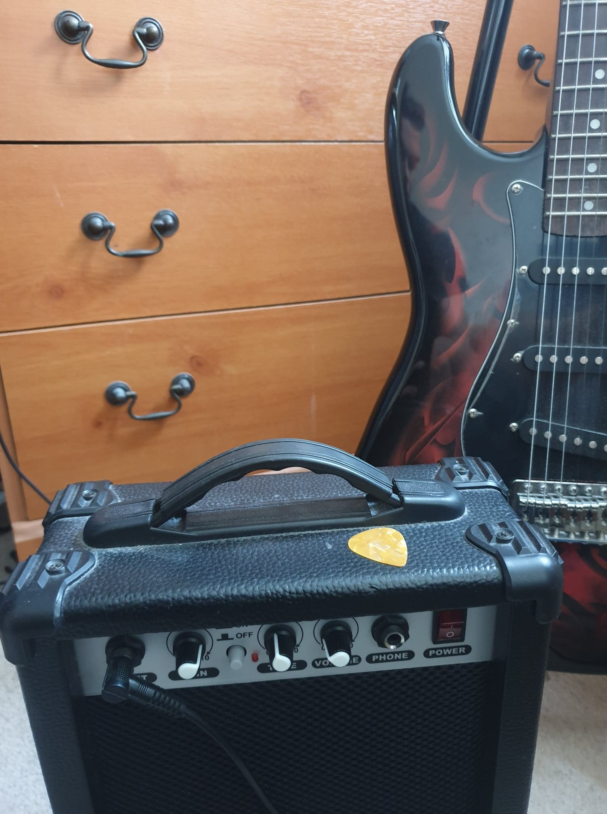

Guitar

Music has always been a big part of my life so I decided that it would be really nice to learn to play an instrument.
I did a little research on what instruments would be suitable for me and I decided to buy a guitar. This was one of my best decisions as I really enjoy the instrument.
It's learning curve is quite steep as in the beginning producing any sound is more difficult compared to, lets say, a piano. But with enough practice it is becomes very powerful
and you can play pretty much anything on it. It can be both support and solo instrument and it allows me to learn any melody that I want. I started learning movie OSTs such as Harry Potter theme
and I progressed slowly towards more complicated songs. You can hear me playing "Prayer In C" here ↓ !
Favourite song?
My music taste is quite diverse and I can't understand people who have a favourite song, group or artist. I personally think that music taste changes with the person's mood. One day I feel like listening to rap music, another, I listen to Ariana Grande...
However, asking for favourite playlists is easy to answer. I have spotify account with several playlists that correspond to what I tend to listen overall. Here is one of the playlists: